Solids of Revolution by Shells
We can have a function, like this one:
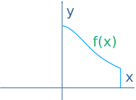
And revolve it around the y-axis to get a solid like this:
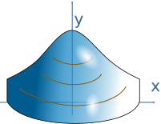
Now, to find its volume we can add up "shells":
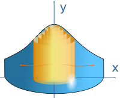
Each shell has the curved surface area of a cylinder whose area is 2πr times its height:
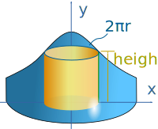
A = 2π(radius)(height)
And the volume is found by summing all those shells using Integration:
That is our formula for Solids of Revolution by Shells
These are the steps:
- sketch the volume and how a typical shell fits inside it
- integrate 2π times the shell's radius times the shell's height,
- put in the values for b and a, subtract, and you are done.
As in this example:
Example: A Cone!
Take the simple function y = b − x between x=0 and x=b

Rotate it around the y-axis ... and we have a cone!
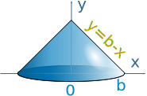
Now let us imagine a shell inside:
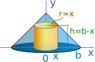
What is the shell's radius? It is simply x
What is the shell's height? It is b−x
What is the volume? Integrate 2π times x times (b−x) :

Now, let's have our pi outside (yum).
Seriously, we can bring a constant like 2π outside the integral:
Expand x(b−x) to bx − x2:
Using Integration Rules we find the integral of bx − x2 is:
bx22 − x33 + C
To calculate the definite integral between 0 and b, we calculate the value of the function for b and for 0 and subtract, like this:
Volume = 1 3 π r2 h
When both r=b and h=b we get:
Volume = 1 3 π b3
As an interesting exercise, why not try to work out the more general case of any value of r and h yourself?
We can also rotate about other values, such as x = 4
Example: y=x, but rotated around x = 4, and only from x=0 to x=3
So we have this:
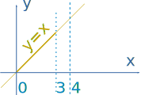
Rotated about x = 4 it looks like this:
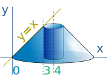
It is a cone, but with a hole down the center
Let's draw in a sample shell so we can work out what to do:
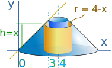
What is the shell's radius? It is 4−x (not just x, as we are rotating around x=4)
What is the shell's height? It is x
What is the volume? Integrate 2π times (4−x) times x :
2π outside, and expand (4−x)x to 4x − x2 :
Using Integration Rules we find the integral of 4x − x2 is:
4x22 − x33 + C
And going between 0 and 3 we get:
Volume = 2π(4(3)22 − 333) − 2π(4(0)22 − 033)
= 2π(18−9)
= 18π
We can have more complex situations:
Example: From y=x down to y=x2
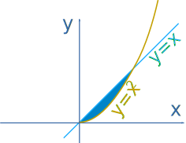
Rotate around the y-axis:
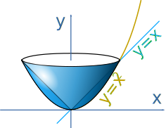
Let's draw in a sample shell:
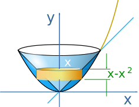
What is the shell's radius? It is simply x
What is the shell's height? It is x − x2
Now integrate 2π times x times x − x2:
Put 2π outside, and expand x(x−x2) into x2−x3 :
The integral of x2 − x3 is x33 − x44
Now calculate the volume between a and b ... but what is a and b? a is 0, and b is where x crosses x2, which is 1
In summary:
- Draw the shell so you know what is going on
- 2π outside the integral
- Integrate the shell's radius times the shell's height,
- Subtract the lower end from the higher end